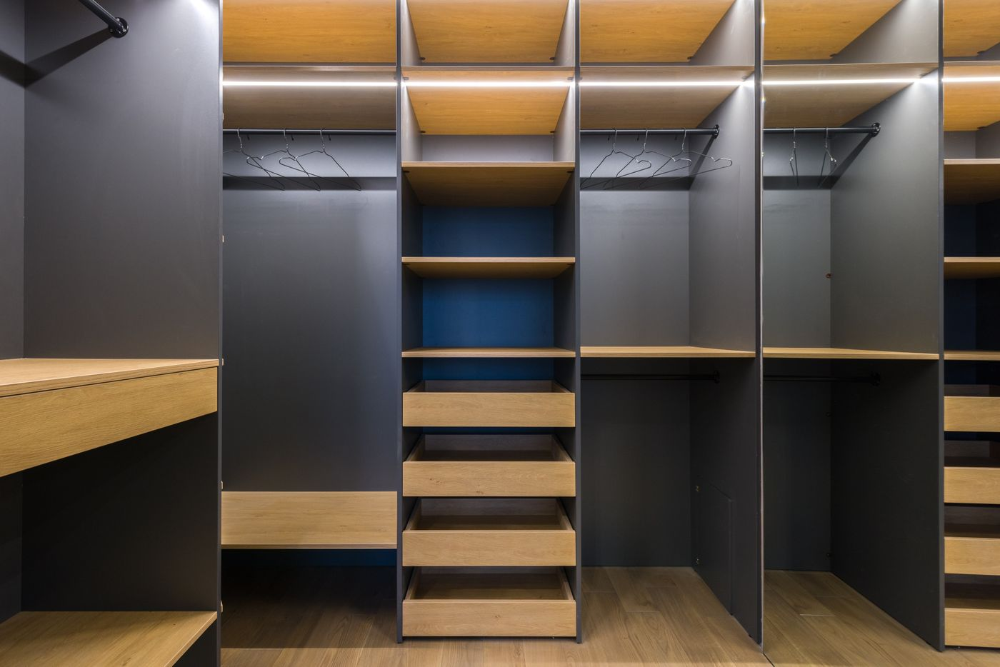
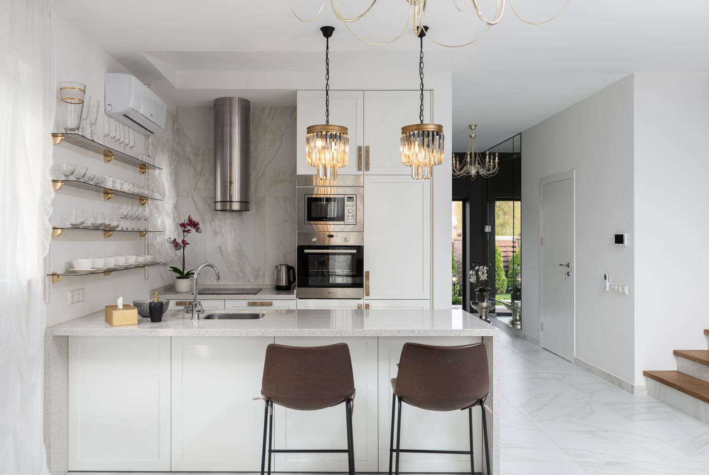
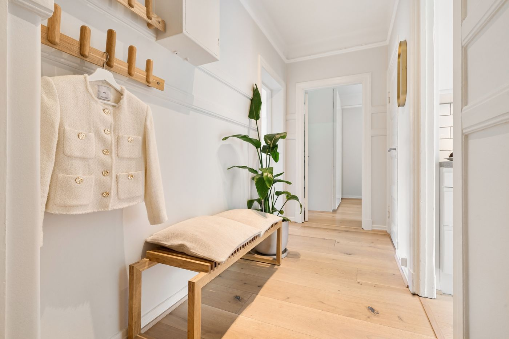
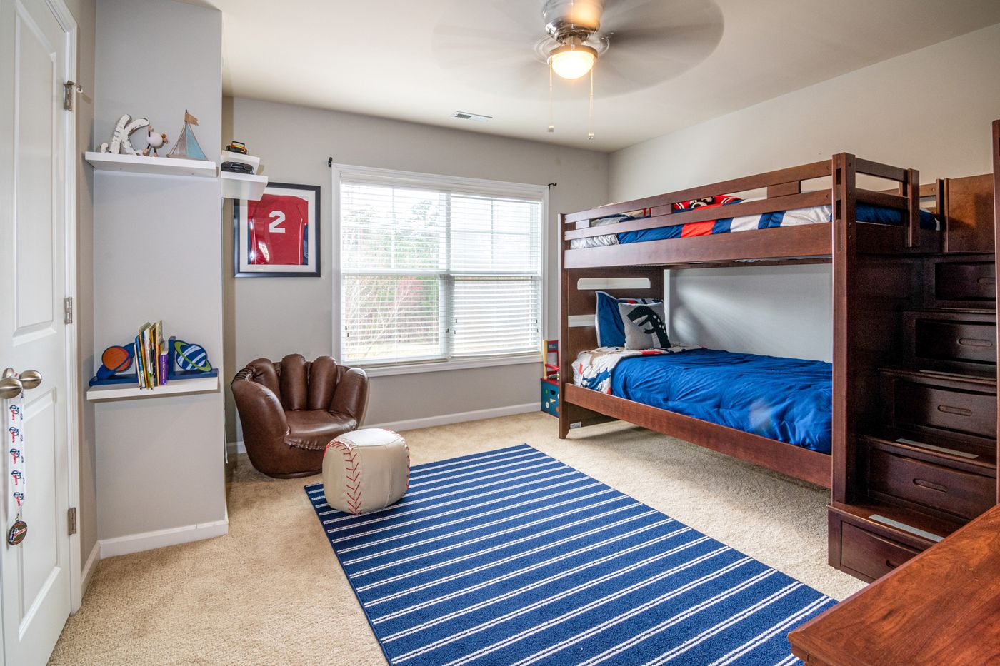
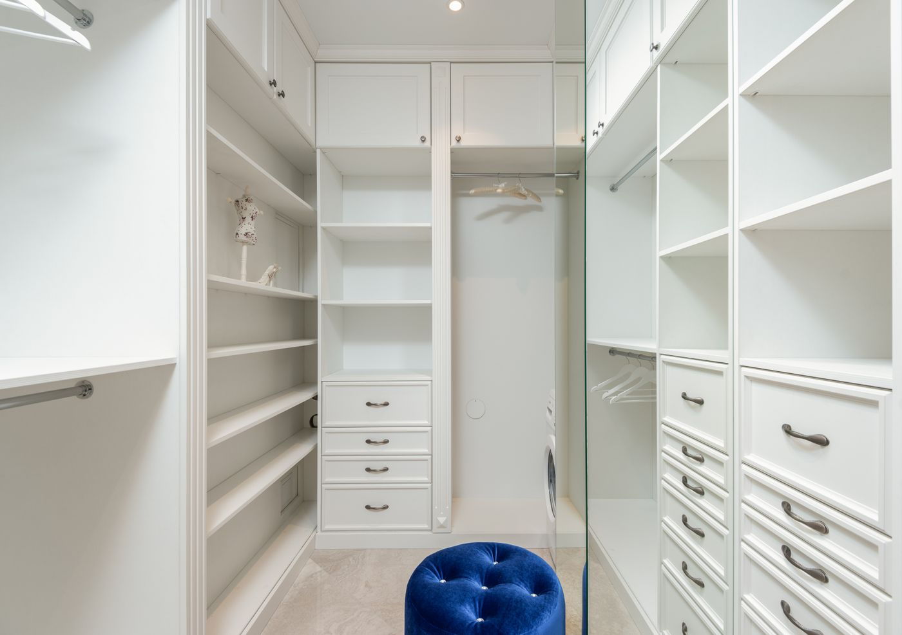
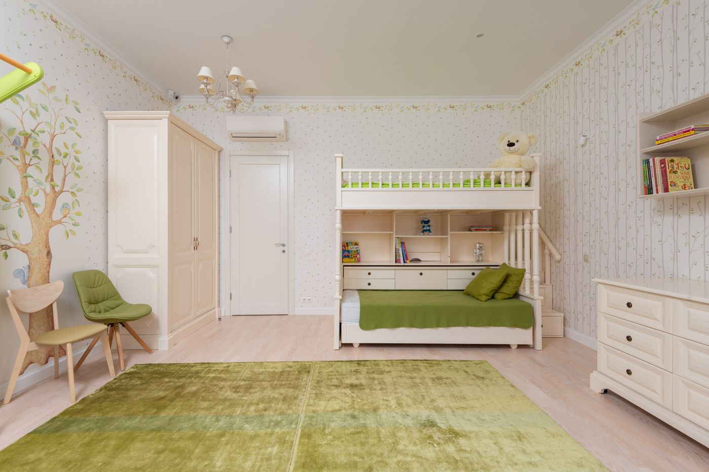
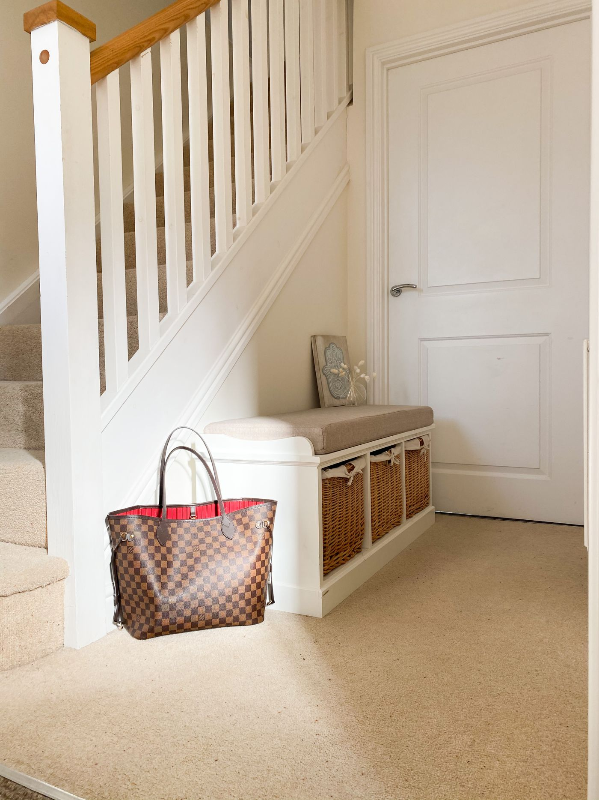
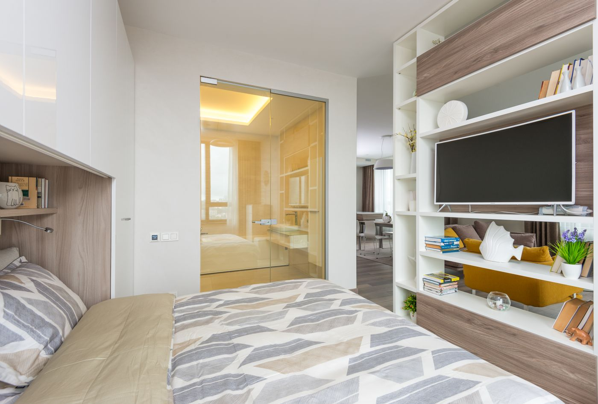
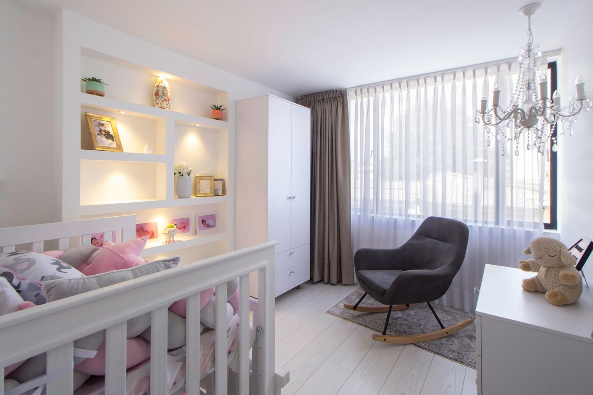
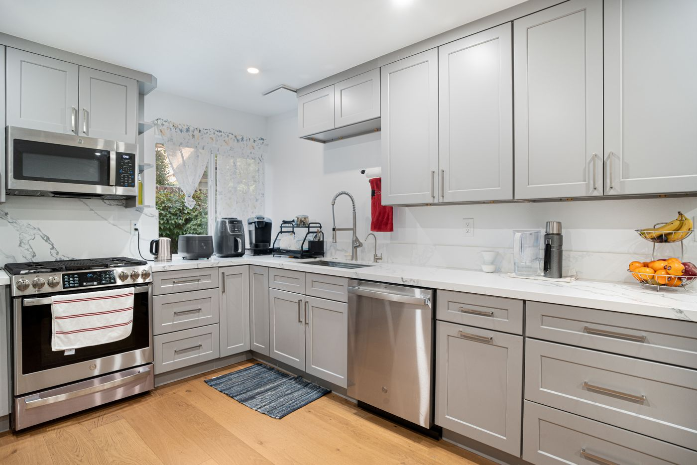

Projelerimiz
Yaptığımız işlerden örnekler
Mutfak, yüklük, vestiyer ve çocuk odası işlerimiz. Büyütmek için fotoğrafa dokunun. Temsili görseller: gerçek fotoğraflar eklenecek

Antrasit kulpsuz mutfakMat lake · gizli tutamakAynısını odamda gör →

Giyinme odasıAntrasit gövde · meşe raflarAynısını odamda gör →

Beyaz modern mutfakAda · tezgah üstü raflarAynısını odamda gör →

Antre vestiyeriAskılık · oturma bankıAynısını odamda gör →

Ranzalı çocuk odasıRanza · kitaplıkAynısını odamda gör →

Krem ada mutfakKlasik kapak · geniş adaAynısını odamda gör →

Beyaz gardırop iç düzeniRaf · çekmece · askıAynısını odamda gör →

Çift kişilik çocuk odasıRanza · gardırop · şifonyerAynısını odamda gör →

Meşe düz mutfakBoy dolabı · ankastreAynısını odamda gör →

Banklı vestiyerSepet bölmeli bankAynısını odamda gör →

Ahşap ada mutfakCeviz kapak · bar tezgahAynısını odamda gör →

Duvar ünitesiYatak başı raf · TV bölmesiAynısını odamda gör →

Ceviz ve beton gri mutfakAda · açık raflarAynısını odamda gör →

Bebek odasıBeşik · kitaplık nişleriAynısını odamda gör →

Gri L mutfakKulpsuz · boy dolabıAynısını odamda gör →

Beyaz U mutfakKlasik kapak · yarımadaAynısını odamda gör →

Gri-beyaz klasik mutfakÇerçeveli kapak · L tipiAynısını odamda gör →
Sizin eviniz de burada olsun
Suruç içinde keşif ve çizim ücretsiz.